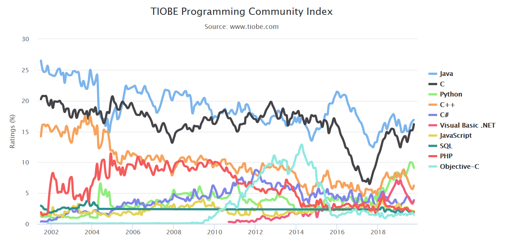

class: center, middle #C++ for Scientists and Engineers (draft) for Software Carpentry Training <br/> **Qingfeng Xia** <br/> <br/> Senior Research Software Engineer<br/> Culham Centre for Fusion Energy, UKAEA<br/> github: https://github.com/qingfengxia<br/> <br/> 2019-11-06 --- ### Schedule Teaching: 90 min Exercise: 60 min: example code provided ### Useful links + online poll (quiz) + shared document/link to example code/this slide --- ### Aimed audiences and Objectives For **intermediate C++ programmers** Objective: to improve the performance and robustness of the large scale software. + Re-introduction of C++ + safer scientific computation + design large scale software (yet completed) - C++ wrapping for Python, or other interpreting languages --- # Introduction to C++ ## what is C++ Object oriented (OO) version of C, "C with [Classes](https://en.wikipedia.org/wiki/Class_(programming))" A superset of C but not the only extension of C: objective-C, D, etc. --- ### then what is C language? C is born with Unix OS from Bell lab in early 1970s. Nowadays, most operation systems (OS) is written in C, Linux kernel Many high level language runtime are written in C(Python)/C++(javascript) Unique: Pointer (address to raw memory space) and full control memory Power: assembly language can be embedded into C code --- ### C++ features over C + object oriented paradigm + generic programming by template `std::vector<int> ints;` + `namespace` to avoid name clash + functional programming, `std::fuction, lambda` + exception (try-catch-finally) + RTTI: runtime type information, but not as powerful as Java/C# --- ## why C/C++ (pros) + fundamental: operation system, device driver + performance: compiling language as Fortran + versatile: Object-orientation, template/generalized, functional + vast third-party libraries + shared feature with C family languages: C#, Java, Objective-C, etc + suitable for large scale software design, HPC e.g. CFD software Ansys Fluent from Fortran to C++ --- ### Popularity of C and C++  The combination of C and C++ takes the lead in Tiobe rankings. --- ### C++ standards + C++ invented by Bjarne Stroustrup in 1985 + the firs standard C++ 98, standard library (STL) was not available + C++11 (modern C++) and C++17/C++20 have some exciting/modern features - `std::thread`, `std::function`, `lambda`, `std::tuple`, smart pointers - `filesystem`(C++17), traits + some can not wait for a better C++: *rust, go* are invented before C++11 published --- ## why not C++ (Cons) + C++ grammar is too complicate - confusing keyword `using` and `static` - too many integer types, java has only unsigned types with fixed ranges - pointer, reference - polymorphic only apply to pointer/reference - no memory manager/garbage collector + less featured standard libraries, vs. python, Java, C#, etc however, C++ has lib and frameworks like boost, Qt + less productivity: on average, 50 lines of production code [The Programmer Productivity Paradox ](https://dzone.com/articles/programmer-productivity) --- ## try out using c++ online compilers There is a list of online compiler to try C++ in webbrowser <https://arnemertz.github.io/online-compilers/> Cppinsights: see how compiler do the compiling <repl.it>: can save user's code snippet, as it is used in this lesseon --- # Safer computation in C++ ## How crucial is the research software space shuttle accidence, image --- ## the jungle of integer types ```cpp //signed char short int long long long // and with their unsigned version ``` What is the size (in byte, unit of memory capacity) of `int` and `long` do you think? <a href="https://repl.it/@qingfengxia/printcpptypesize">run example by online compiler</a> --- ### C++'s integer types depends on CPU, OS, even compiler ```cpp // here we only consider 32 and 64bit OS void* // identifed from memory address pointer byte size //signed and unsigned integer has the same length char 1 byte short 2 bytes int 4 bytes long depends on OS, compiler settings long long 8bytes ``` windows 64 bit, has `long` just 4 bytes, while on Linux 64 bit OS, it is 8 bytes `size_t` returned by `sizeof` operator and `std::vector.size()`, it is 64 bits on both `uint64_t` on 64 bit windows and Linux system, while 32 bit unsigned integer --- ### fixed width integer types in C and C++ **Java and C# has fixed byte size for integer type cross-platform!** header `<cstdint>` has fixed width integer types, `uint32_t` `int64_t` --- ### numeric type in matlab  matlab `a = 1.0` default to double type, as C++ python, etc --- ### numeric types in other programming languages | language | C/C++ | Fortran | Java | javascript | C# | python3 | Matlab | | ---------------------- | --------------- | --------------- | --------------- | --------------- | --------------- | --------- | ------ | | type | int | integer | int | Number | int | int | double | | upper and lower limits | -2^31 to 2^31-1 | -2^31 to 2^31-1 | -2^31 to 2^31-1 | -2^53 to 2^53-1 | -2^31 to 2^31-1 | unlimited | | | byte in memory | 4 | 4 (KIND=4) | fixed 4 | 8 | fixed 4 | >=24 | >=8 | --- ### deal with algorithm overflow <https://www.pluralsight.com/blog/software-development/convert-unsigned-int-to-signed-int> ```cpp #include <limits> // for std::numeric_limits #include <stdexcept> // for std::overflow_error int SizeToInt(size_t u) { if (u > std::numeric_limits<int>::max()) { throw std::overflow_error( "size_t value cannot be stored in a variable of type int."); } return static_cast<int>(u); } ``` --- ## float point number type ### decimal vs floating point + *decimal* in Python/Java, precisely map to human counting system, order=10 + float point, is based on binary system, maybe not precise to represent *decimal*# ---   --- ### float point number types <https://en.wikipedia.org/wiki/Double-precision_floating-point_format>, IEEE754-2008 standard - 16bit `half` precision, widely used in GPU - 32bit single precision, `float`, at least 9 significant digits - 64bit `double` precision, `double` for short in C/C++ - 128-bit: Quadruple (binary128), barely any CPU support this natively - `long double` depends on compiler implementation `double` is a common primitive type in programming languages --- ## Implicit conversion (1) C language features ### dangerous integer type implicit conversion It is crucial to know the types of your programming languages! ```cpp void std_container_index_test(){ std::vector<int> v; int index= 10; if (index < v.size()-1) // there is a compiler warning here std::cout << v[index]; } ``` <a href="https://repl.it/@qingfengxia/stdcontainerindextest"> run examle by online compiler</a> --- ### algorithmic promotion + safe from smaller type (smaller in byte size, range) to bigger type from `char -> short -> int ->long -> long long` from `unsigned int -> signed long long` + from `half->float->double->long double` + same width: `signed int -> unsigned int`, it is potentially dangerous! see example code in later section + `enum` is `int` if the underlying type is not explicitly specified see more details: <https://en.cppreference.com/w/cpp/language/implicit_conversion#Integral_promotion> --- ### numerical conversion + if there is no rule for promotion, it is an conversion - e.g. floating–integral conversions - The programmer need to care about out of range, loss of precision + mixing of signed and unsigned integer of size byte size from `signed int -> unsigned long long` ```cpp int n = -1; unsigned int u = 1; std::cout << "Comparing signed and unsigned:\n" << " -1 < 1? " << (n < u) << '\n' << " -1 > 1? " << (n > u) << '\n'; ``` see example <https://en.cppreference.com/w/cpp/language/operator_comparison> --- ## implicit conversion (2) C++ object oriented ### implicitly cast to base/parent type pointer/reference this is the polymorphic, the essence of object oriented programming Pointer conversions: from a type pointer to `void`, from `nullptr` to any type pointer function name to function pointer array name to pointer --- ### if constructor with single parameter exists ```cpp const char* c_string = "hello world"; std::string s = c_string; ``` it leads to the question of function overloading priority --- ### function overloading resolution todo! --- ## prevent implicit conversion (1) ```cpp #include <iostream> class A { bool b; public: A(bool param) // use `explicit` to see the difference { std::cout<<"bool actor called with param =" << param << std::endl; } explicit operator bool() {return b;}; }; int main(){ A a = A(1); // int -> bool, no compiler warning, but maybe not what you want A b(2.3); // double -> bool, no compiler warning, but maybe not what you want A c = true; // compiler error if the constructure is protected by `explicit` A d = 1.5; // compiler error if the constructure is protected by `explicit` } ``` C++ keyword `explicit` can prevent implicit conversion on constructor --- ### prevent implicit conversion (2) 1. explicit way for one specific type ```cpp void function(int i) { /* implementation */} void function(char i); // give link error, this declaration has no implementation //or, in C++11 void function(char i) = delete; ``` **2. You cannot have implicit conversion and template argument deduction at the same time.** ```cpp template<class T> void f(T, T); template<class T> void g(T, std::type_identity_t<T>); f(4.2, 0); // error, deduced conflicting types for 'T' g(4.2, 0); // OK, calls g<double>, bypass this restriction and enable implicit conversion ``` 3. `nothing_but<>` can handled all builtin types --- ### explicit cast in C++ `static_cast<T>` conversion at compiling time, safer ```cpp double d = 123456.789; float f = static_cast<float>(d); // silly, I messed up the value type and pointer type float* pf = static_cast<float*>(d); ``` `dynamic_cast<T>` conversion at runtime `const_cast<T>` `any_cast<T>` from `std::any` unbox to more specific type `reinterpret_cast<>` dangerous! do not use! --- ## boolean conversion + a wide range of types in C++ can implicitly converted into bool type nullptr-> false; 0.0 -> false; + from bool to integer is well defined - bool to int: true => 1, false => 0 - if a type can be converted into bool, but further conversion into integer should be forbidden e.g. `if(std::cin) {...}` is wanted, but `int n = std::cout;` must be avoided, then `explicit operator bool() const { ... }` --- ### surprising conversion from pointer to bool ```cpp void foo(const std::string& in) { std::cout << in << '\n'; } void foo(bool in) { std::cout << "bool: " << in << '\n';} foo("Hello World"); ``` see explanation <https://www.bfilipek.com/2019/07/surprising-conversions-char-bool.html#more> In short, it is caused by auto conversion rule of C++, conversion from `const char*` to bool has higher priority because bool is a built-in type! --- ## Exception safety 4 levels of exception safety + ideal: no failure + strong: failure but rollback to previous condition, think about online banking transaction + basic: failure without resource leakage, important for server process + none: no guarantee, left program in a deterministic condition There books/guidelines on write exception safety C++ code, [C++ core guideline on exception](https://github.com/isocpp/CppCoreGuidelines/blob/master/CppCoreGuidelines.md#S-errors) --- ### some guideline from [SEI CERT C++ Coding Standard](https://wiki.sei.cmu.edu/confluence/pages/viewpage.action?pageId=88046682) [ERR54-CPP. Catch handlers should order their parameter types from most derived to least derived](https://wiki.sei.cmu.edu/confluence/display/cplusplus/ERR54-CPP.+Catch+handlers+should+order+their+parameter+types+from+most+derived+to+least+derived) do you know why? --- ### exception change in C++11 and C++17 C++98: defined a few standard exceptions in `<stdexception>` use then instead of throw int or string they are all derived from `std::exception` so it is easier to catch all derived exceptions https://en.cppreference.com/w/cpp/error/exception C++11: `current_exception` pointer, `nested_exception` c++17: exception specification changed, ` f() noexception(false)` instead of `f() throw(std::logical_error)` --- ## exception/error in math computation ### integer underflow/overflow - CPU set status register, which may be checked by C and C++ - C lib: `errno` set and clear by library function <https://www.gnu.org/software/libc/manual/html_node/Errors-in-Math-Functions.html> <https://en.cppreference.com/w/c/error/errno> - C++ way to detect under/overflow Note: know and detect your integer range in runtime C has `LONG_MAX` macro, c++ has more general one `std::limits<long>::max()` --- ### float point exception and special values Divied by zero (float point types)might be blocked by compiler at compiling time. NaN, +Inf, -Inf ```c printf("sqrt(-1) = %f\n", sqrt(-1)); printf("DBL_MAX*2.0 = %f\n", DBL_MAX*2.0); printf("DBL_MAX*-2.0 = %f\n", DBL_MAX*-2.0); ``` those 3 special values operates with a valid number resulting in those special values --- ### setup float point exception check in C++ This is a C99 feature in header `<cfenv>` ```cpp if(fetestexcept(FE_DIVBYZERO)) printf(" FE_DIVBYZERO"); if(fetestexcept(FE_INEXACT)) printf(" FE_INEXACT"); if(fetestexcept(FE_INVALID)) printf(" FE_INVALID"); if(fetestexcept(FE_OVERFLOW)) printf(" FE_OVERFLOW"); if(fetestexcept(FE_UNDERFLOW)) printf(" FE_UNDERFLOW"); feclearexcept(FE_ALL_EXCEPT); ``` <https://en.cppreference.com/w/c/numeric/fenv/FE_exceptions> --- ## diagnostics tools to improve code safety + [Clang Power Tools](https://marketplace.visualstudio.com/items?itemName=vs-publisher-690586.ClangPowerTools), turn on compiler's all warning switches + cppchecker, lint, some other linting/checker tools + [SEI CERT C++ Coding Standard](https://wiki.sei.cmu.edu/confluence/pages/viewpage.action?pageId=88046682), online reading + C++ Core guidelines checker (a plugin of visual studio) + etc. --- # design large scale software ## Software architecture ```cpp // the software is like a house // namespace as component contains more classes namespace FrontWall{ class Block { function makeBrick(){ int sand = 1; ... } ``` --- ### stand on giant shoulder [awesome C++](https://github.com/fffaraz/awesome-cpp) [awesome modern C++](https://github.com/rigtorp/awesome-modern-cpp) + libraries + learning material, video, blogs, books, talks conferences + useful tools: IDE, profilers, build, package and code analyzer --- ### design pattern --- ### Base class and type system for C++ Compared with other compiling languages like C# and Java, C++ does not provide a type system, neither a base class. Here is an implementation, extracted from FreeCAD project <https://github.com/qingfengxia/cppBase> There is no need to write factory class, but register a type by simple macro (only achievable by macro). ```cpp Base::BaseClass* bc = static_cast<Base::BaseClass*>(Base::Type::createInstanceByName("CClass")); CClass* c2 = type_dynamic_cast<CClass>(bc); ``` see the full example <https://github.com/qingfengxia/cppBase/blob/master/TypeTest.cpp> --- ## C++ and Python ### python and C++ are good companions python is an interpreter lang, for fast prototyping C++ codes run fast for large program and HPC a few CPython standard modules are re-written in C/C++ for better perfomance There are various methods to export C++ API as python module. see more example and cmake/setup.py integration at <https://github.com/qingfengxia/python_wrap> --- ### Wrapping C++ code to other languages `swig` can wrap C/C++ to many languages, C#, Java, javascript, python, ruby, etc using the `interface.i` file --- ### `numba` JIT example ```python from numba import jit @jit def create_fractal(min_x, max_x, min_y, max_y, image, iters): height = image.shape[0] width = image.shape[1] pixel_size_x = (max_x - min_x) / width pixel_size_y = (max_y - min_y) / height for x in range(width): real = min_x + x * pixel_size_x for y in range(height): imag = min_y + y * pixel_size_y color = mandel(real, imag, iters) image[y, x] = color return image ``` full example at <https://numba.pydata.org/numba-doc/dev/user/examples.html>